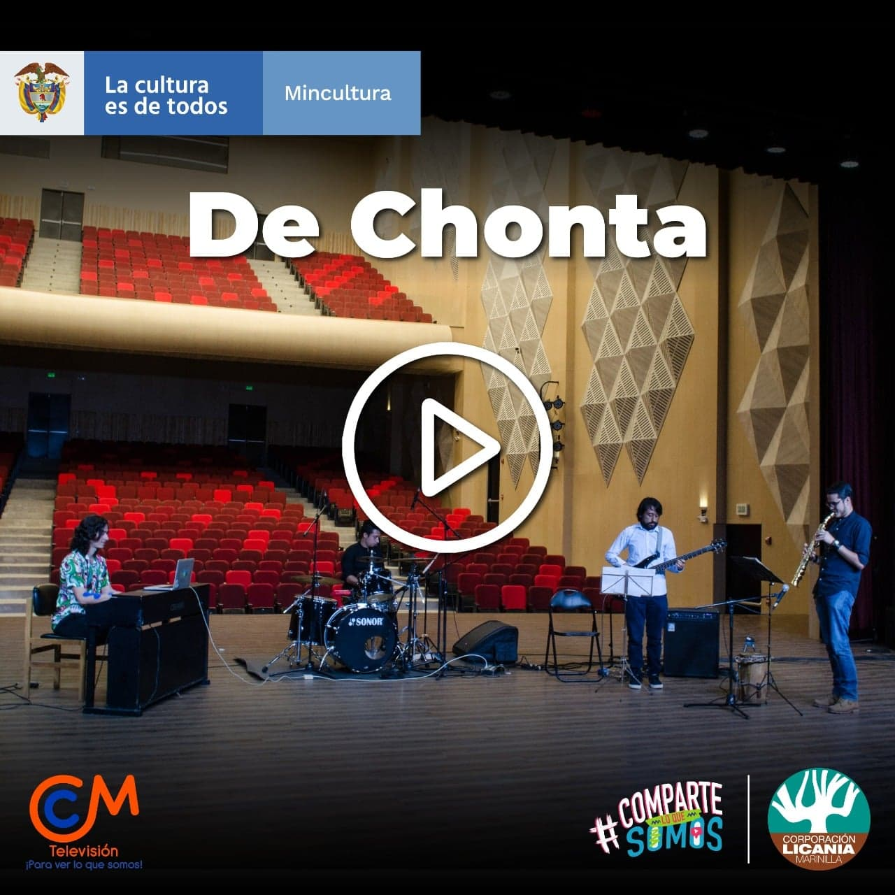
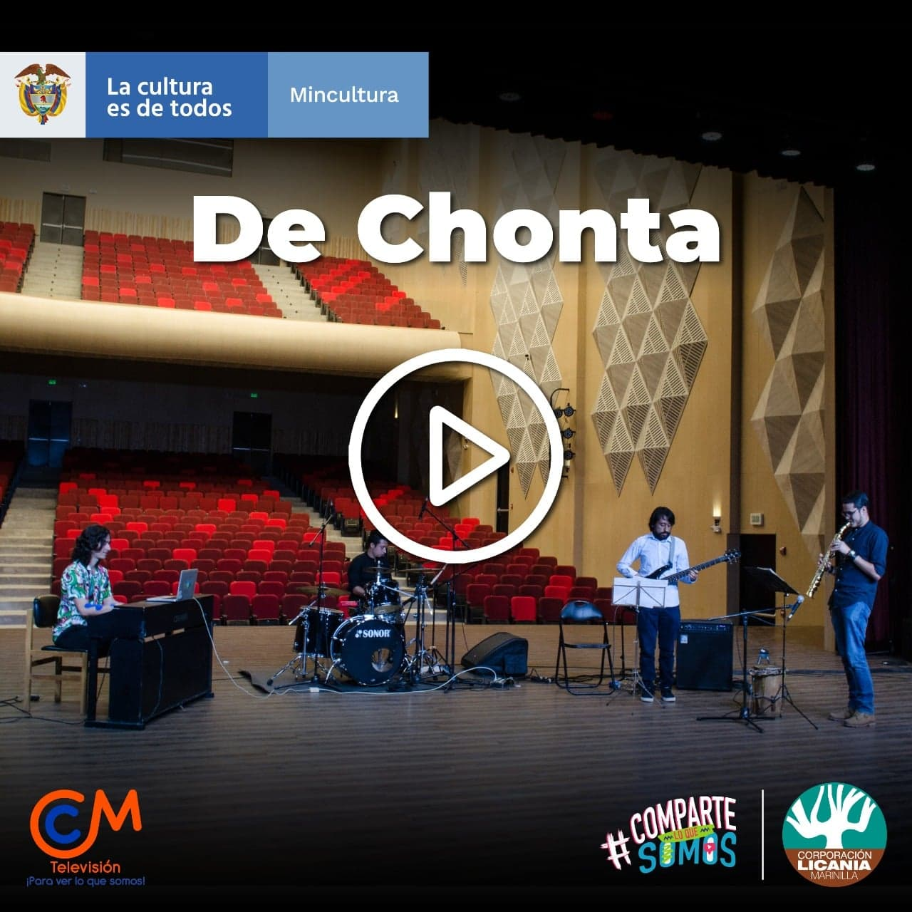

Galería de Conciertos
En esta galería puedes ver todos los conciertos de ALTIPLANO Festival de Jazz del Oriente y del Encuentro de Cuerdas Frotadas del Oriente 2020
 

Programación
No te pierdas nuestros estrenos en vivo. Aquí podrás encontrar toda la información con las fechas de emisión de nuestros conciertos.

Oferta Formativa
En el marco del proyecto "Licania: Sala de Conciertos Digital". La corporación Licania se complace en invitar a músicos de Jazz y Cuerdas frotadas a hacer parte de unos talleres de formación que tendrán lugar en el mes de septiembre y octubre en los cuales se realizará el montaje de dos obras que serán editadas en forma de mosaico y harán parte de nuestra sala de conciertos digital. En el siguiente formulario buscamos recopilar información sobre las personas interesadas en participar de estos talleres y montajes. Oportunamente nos pondremos en contacto con l@s interesad@s para darles a conocer las fechas y horarios de los talleres.
¿Quieres hacer parte de nuestra Sala de Conciertos? Te invitamos a participar de nuestra oferta formativa y a participar de los ensambles virtuales de nuestra sala.
Registro Fotográfico
Así creamos nuestra Sala Digital. Esta galería muestra algunas fotos del detrás de escena de la grabación de los conciertos.
NUESTROS ALIADOS